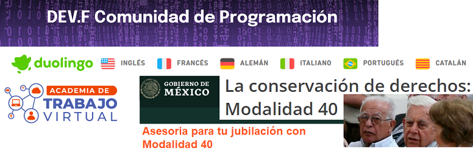

CV Jesús Gaucín A
Now:
- Now: DEV.F Escuela de CODE, Iniciando estudios
- Now: Duolingo Estudiando Inglés
- Now: Academia de trabajo Virtual 2024 upwork
- Now: Asesorias jubilaciones MODALIDAD 40 IMSS
Educación:
- Universidad Autonoma del Noreste 1988 LAE
- Universidad Autonoma del Noreste 1988 Contador Publico
Otros:
- CONALEP 2022 Operador 5a Rueda cruce Internacional
- Finanzas confiables, Certificación Mod 40 IMSS
Experiencia Laboral

- STIL: Operador 5a.Rueda de cruce internacional 2023
- SERTEC: Operador 5a.Rueda de cruce internacional 2022
- SELTTRA: Operador 5a.Rueda de cruce internacional 2022
- Ventas de Insumos MRO a la industra maquiladora 2003-2021
 Ventas MRO
Ventas MRO
- APTIV/Delphi Contador de Nominas 1999-2003
- Chihuahua Charlie´s Cadena Anderson Contador General 1996-1999
 Chihuahua Charlie´s
Chihuahua Charlie´s
- Soriana/DESLAC Contador General 1993-1996

Habilidades:
Responsabilidad y puntualidad / Confiable / Compromiso / Orden y Organización / Actitud Positiva / Manejo de emociones